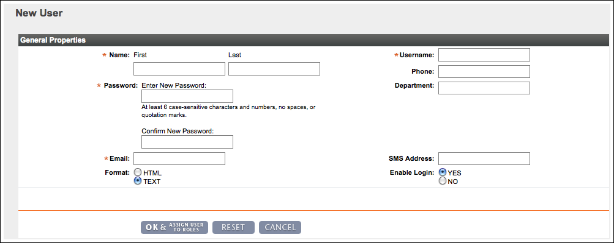

vFabric Hyperic 5.7 : ui-Admin.User.New
This page last changed on Jan 04, 2012 by mmcgarry.
To create a new Hyperic user:
- Click New User on the Administration page.
- The New User page appears.
 - Enter values for:
- Name
- Username — The username the user logs in with.
- Phone
- Department
- Password — Passwords must contain at least 6 case-sensitive characters and numbers, and no spaces or quotation marks.
- Email — User's email address.
- Format — Toggle the radio button to select HTML or plain text.
- SMS Address — An email-to-SMS gateway email address for the user's SMS device.
- For a cellular phone on the Cingular network, this might look like 4155551212@mobile.mycingular.com. Check with the service provider for details about an email-to-SMS configuration. Basic alert notification sent to this user's SSS address will be in long format, which can result in up to five separate messages on the SMS device each time notification is sent by HQ. Hyperic recommends that SMS alerting be used in conjuction with escalations, not basic alert notification, but short format is used there.
- Enable Login — Toggle the radio button to disable or enable the account. The user cannot log in when the login is disabled.
- Click:
- OK in Hyperic HQ to save the new account.
- OK and Assign to Roles in vFabric Hyperic.
{kind=link}
{kind=link}